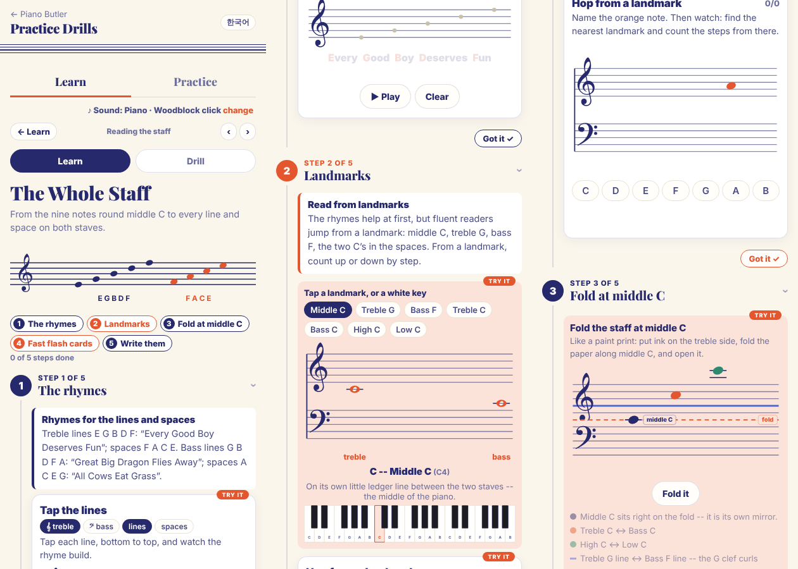
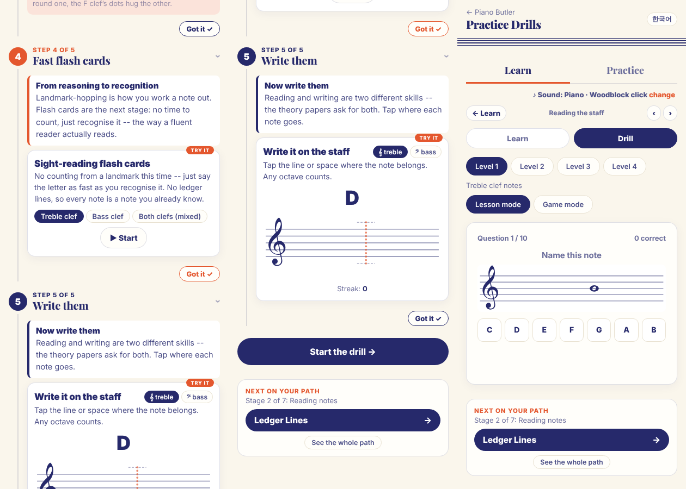

Built on what you already decided: Queensland = the treble staff and Kingsland = the bass staff (d2); the sayings each belong to a land, and crown check first (your guide answer: children mix up the four sentences and don't look at the clef first); the fold at middle C with the three Cs (w4); the landmarks moved here from chapter 4. It also follows the Book rules: one idea per page, nothing twice, set tasks, big and full pages.
The draft, 7 pages: 1 the map of two lands · 2 Crown check first · 3 Queensland (Every Good Boy Deserves Fun on the lines, the Queen's FACE in the spaces) · 4 Kingsland (the King's dragon on the lines, his cows in the spaces) · 5 Fold at Clara's rung (G meets F, C meets C) · 6 Five landmarks (read fast from the nearest one) · 7 My five checks. Ledger lines still wait for chapter 6.
How to answer: reply with codes, e.g. "B1 yes, B2 ..., A5 ok". Yellow marks in the draft (B1, B2, B3, B5) show the lines that wait for your answers.
When your students read the whole staff, what goes wrong most often? (For example: using the treble sayings on the bass staff, counting every note from the bottom line.)
Rhymes first or landmarks first -- and how do you move a student from saying the rhyme to reading fast?
One tip for parents for this chapter: what should five minutes at home look like?
A · what today's chapter 5 does (the online lesson and drill that exist now) · B · your decisions, each with my recommendation · the 7 draft pages · today's online lesson, for comparison.
Today chapter 5 is only an online lesson (5 tool steps) and a 4-level drill, made when the chapter was split off in Phase 402. No Lesson Book, Workbook, Teacher copy or guide page yet.
The lesson opens with all four sayings in one paragraph, with no owner and no crown check -- exactly the mix-up in your guide answer. Draft: crown check is step 1, and each saying lives in its own land.
Names don't match chapter 4: "Treble G", "Bass F", "Middle C". Draft: the Queen's G, the King's F, Clara's C.
High C and Low C (two ledger lines) are in the landmark tool and the fold tool -- ledger lines are chapter 6. They come out of chapter 5.
Middle C is "on its own little ledger line" -- chapter 4 calls it Clara's ladder rung; the word ledger line waits for chapter 6.
The online lesson is not the Lesson Book on screen yet. After your OK it becomes the book on screen, like chapters 1-4; the fold, landmark hop, flash cards and write-it tools stay as its moving parts.
The drill has 4 levels (treble, bass, both, keys): no crown-check level and no landmark level; the treble and bass levels also use the notes just outside the staff without saying so (see B3, B6).
No Workbook, Teacher copy or guide page yet -- after the Lesson Book, I'll build them by the Book rules (set, solo, big, filled; nothing twice).
The chapter's picture in the app and on the house map is chapter 4's. It gets its own: the two lands.
Two new pen characters on page 4: the King's dragon (green, coral wings) flying above his lines, and one of his cows beside his spaces. First versions -- tell me if you want them changed.
The four sayings. Keep the ones in the app: Every Good Boy Deserves Fun · FACE · Great Big Dragon Flies Away · All Cows Eat Grass? (Some teachers say "Deserves Fruit".)
Reckeep them as they are.
Names for the two space Cs (treble space 3, bass space 2): "Queensland C" and "Kingsland C"? Other options: "treble C / bass C", or "the Queen's C / the King's C" (but the Queen's five already start on Clara's C).
RecQueensland C and Kingsland C.
The notes just outside the staves -- G over Queensland's top line, F under Kingsland's bottom line (D and B were chapter 4's). In chapter 5 (no ledger line needed; the drill already uses them), or wait for chapter 6?
Recchapter 5, one line each on pages 3 and 4 (as drafted).
The order: crown check → Queensland → Kingsland → fold → landmarks. The fold brings in the two space Cs and the G/F pair; the landmarks page then uses them to read fast.
Recas drafted.
The mirror walk (page 5): both thumbs share middle C, the right hand walks up C D E F G while the left walks down C B A G F, at the same time. Together, or one hand after the other?
Rectogether -- it is the fold you can feel.
Drill levels, one idea each (like chapter 4): 1 Crown check -- same spot, which land? · 2 Queensland lines and spaces · 3 Kingsland lines and spaces · 4 The five landmarks · 5 Landmark hop (a step or a skip from one) · 6 Both lands mixed, fast (the flash cards) · 7 Find it on the keys (exact octave).
Recthese seven.
Workbook ideas (set and solo, built after the book): W1 rhyme ladders (write each line's letter, then the saying's word) · W2 crown-check pairs (the same spot in both lands: write both names) · W3 fold the page (a printed grand staff to fold on the dashed line, then write which notes met) · W4 landmark hop strips · W5 the King's cows: draw a cow on each A C E G note, and the Queen's FACE: write her face's letters · W6 a secret message across both lands · last page the check-up on paper.
Recall six -- tell me any to drop.
The opener picture: minimal, as you asked for chapter 4 -- the grand staff with the two land names and the royal family at the end of the lines. Or a drawn map (two lands with Clara's rung between)?
Reckeep it minimal.
The rhymes first, then landmarks (Treble G, Bass F, High C, Low C...), the fold (with High C ↔ Low C), flash cards and write-it.


Right: the drill today -- level 1 "Treble clef notes", levels 2-4 bass, both, keys.